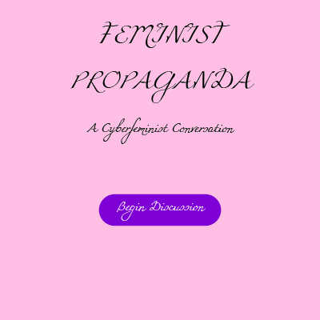
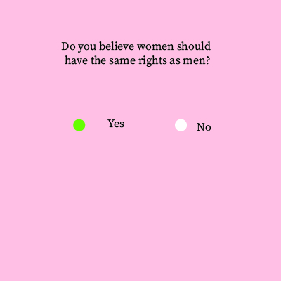
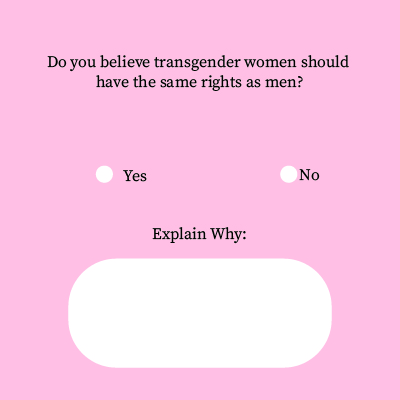
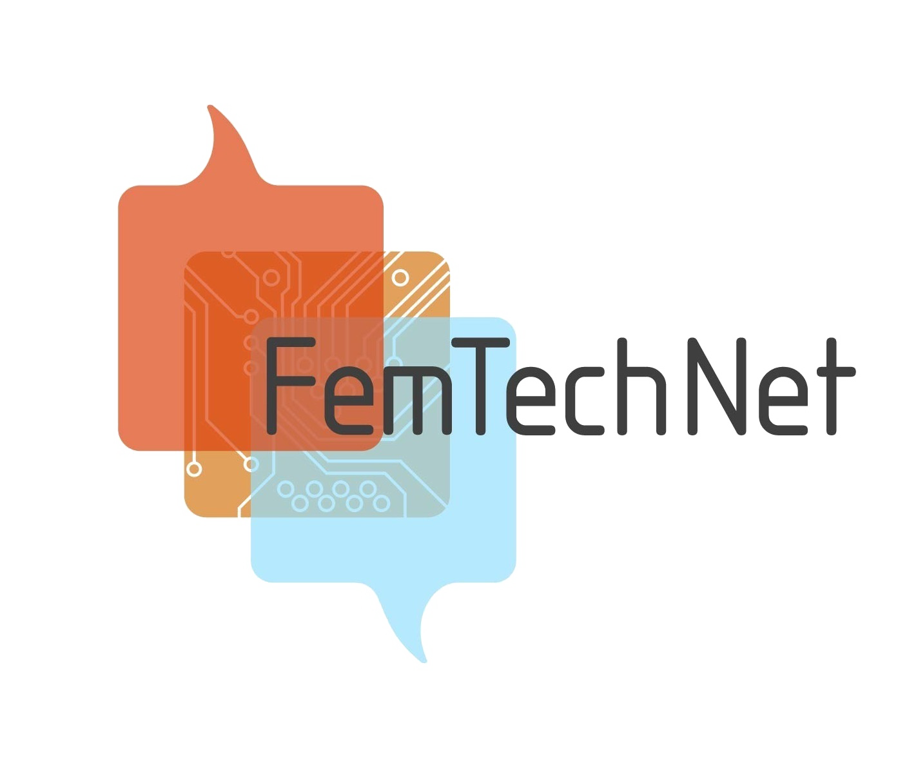
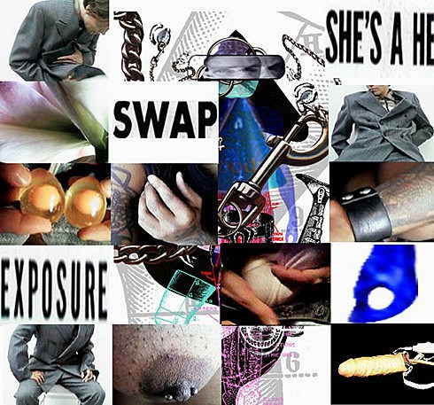

Andrea Mestre
andreamestre7258@gmail.com
An interactive experience designed to make people think about their relationship wth feminsim and gendered issues. The experience is built as a questionnaire that acts as an AI. The "AI" asks you questions about your knowledge on issues surrunding feminism, social justice, and politics and forces you to think critically about your answers based on your responses. It essentially simulates a conversation about feminism so that the user can become more informed without fear of judgement, pushing of bias, or interruption.
  My starting topic is feminism as an ideology and philosophy. I have been actively supporting feminism and gender equality for many years now and I still think many people in western society lack the empathy to look at scenarios through a more feminine lens. I think it is incredibly important that we push people to try and break down their biases against feminism (instead of shouting names and labels like Feminist Propaganda and Femi-nazi and Feminist Bitch) and try and learn from and understand this sort of perspective. I know there are many feminists out here who are trying to help people better understand them, but being shut out just for calling themselves feminists. I think it is important to make this concept explorable because a big part of Feminism is to explore and challenge ideas about femininity, masculinity, oppression and opportunity while trying to include as many people as possible into the discussion. Without challenge and discussion, we may never be able to move forward and learn from our mistakes.
As I mentioned before, I think it is important for people to try and think critically about feminism, and I think that includes addressing all its positive and negative aspects. Many shun feminism for criticizing men when feminists claim to want equal rights, and some define feminism as empowerment for white women and not people of colour, gay/bisexual women, trans women, and non-gender conforming people. My mission is to hopefully encourage people to think beyond their personal scopes and try and consider people and situations they might have never considered before. Furthermore, many people believe that they are not affected by patriarchy or misogynistic cultural practices, but they are deeply embedded in our day-to-day lives without us even realising it. I want to make people more aware of how this type of culture can affect everyone involved, not just women but men too. Hopefully, my space will provide a space for relflection, education, debate and self-criticism which will then translate into the offline space as well.
I really hope that my project will empower feminists with different backgrounds to appreciate their experiences and to appreciate the active work they are doing to promote equality and inclusion. I hope that by simulating a conversation with a “feminist”, it will allow people to feel less afraid about approaching this topic and embracing its nuances as well as the aspects people find empowering. Hopefully, my space will help people understand the complexities behind the movement and allow them to appreciate it even more. I also hope it will promote collaboration in both online and offline environments, rather than hostility and fear.
All New Gen was one of the first recognizable pieces of cyberfeminist art. This artwork was a computer-art game and installation first released in 1993. The art piece was created in the early stages of cyberfeminism. The movement began as the world wide web was becoming more accessible and many believed that it would offer a genderless haven for oppressed genders and minority groups, although this utopian fantasy was short-lived. The game was created as a reflection of this genderless space, so the game started with the question 'What is your gender? Male, Female, Neither.' The correct answer is ‘Neither’, as any other answer will send the game into a loop that ends it. Although cyber-feminsim is a very small online movement nowadays, many of it’s core beliefs are still discussed today for both online and real life contexts.
FemTechNet.org is an online community whose mission is to recommend readings, resources and support for feminists and gender scholars online. The website offers readings, manifestos, videos, tutorials, workshops and other learning resources for those interested in the subject. On the site, you can find a page dedicated to cybersecurity and avoiding online violence, as well as resources to protect your online identity. This website allows its users to think critically and educate themselves about online identity, cyberfeminism, cultural effects of online violence and how we take in media online.
Brandon was a website dedicated to the murder of Brandon Teena, a transgender man who was raped and murdered upon the discovery of his genitals being female. The website was released in 1998 and remained online for a year before evolving into an installation piece. The non-linear and participatory nature of the online medium was meant to explore his tragic death, using imagery, hyperlinked photographs and live chats. The piece is also considered a cyberfeminist work of art, since it plays with notions of gender identity or lack thereof.
My project will be different than the ones mentioned above because I will be directly confronting the user about their possibly gendered biases in relation with today’s social, political and environmental issues. I want to build my concept on many of the common themes associated with cyberfeminism, such as lack of gender, while also demonstrating how important feminism is in the real world as well as the online world. I think the subtle aesthetic of my project will also allow it to be more digestible to certain user, so that the experience won’t feel too intense when you begin but will gradually increase in intensity as the user progresses. Thus, this will allow the users to get a better sense of how complex and nuanced the topic can be.